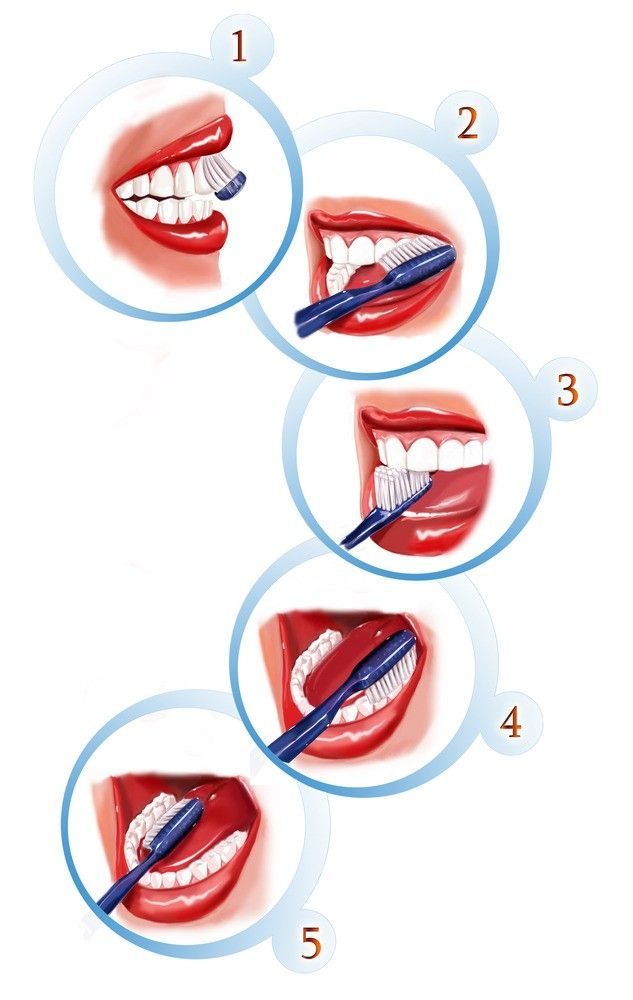

La higiene dental es fundamental para mantener dientes y encías saludables. Un buen cuidado bucal no solo previene enfermedades dentales, sino que también mejora tu salud general y autoestima.
Pasos para una Buena Higiene Dental
Cepillado de dientes: Cepíllate los dientes al menos dos veces al día, utilizando un cepillo de cerdas suaves y una pasta dental con flúor.
Uso de hilo dental: Usa hilo dental al menos una vez al día para eliminar restos de comida entre los dientes y prevenir la acumulación de placa.
Enjuague bucal: Utiliza un enjuague bucal antiséptico para eliminar bacterias y refrescar tu aliento.
Visitas regulares al dentista: Es importante ir al dentista cada seis meses para detectar cualquier problema a tiempo y mantener una buena salud bucal.

¿Por qué es esencial?
El cuidado dental adecuado previene problemas como las caries, la gingivitis,
el mal aliento y otras infecciones bucales. Además, contribuye a la salud general del cuerpo,
ya que las infecciones bucales pueden afectar otros órganos.